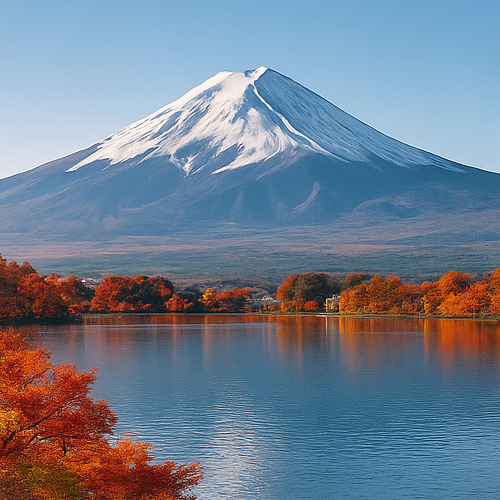

Monte Fuji – Símbolo Eterno de la Naturaleza, la Cultura y la Espiritualidad de Japón
Con sus 3.776 metros de altura, el Monte Fuji (ÂØ壴±±, Fujisan) no es solo la monta√±a más alta de Jap√≥n ‚Äî es un icono nacional, un santuario espiritual y un s√≠mbolo mundial de la armon√≠a entre el ser humano y la naturaleza. Perfectamente sim√©trico, eternamente coronado de nieve y lleno de mitolog√≠a, el Monte Fuji ha inspirado a poetas, peregrinos, pintores y aventureros durante más de mil a√±os.
Patrimonio Mundial y cumbre sagrada
Inscrito como Patrimonio Mundial de la Humanidad por la UNESCO en 2013, el Monte Fuji es venerado no solo por su belleza natural, sino también como un lugar profundamente espiritual. Desde el siglo VII, los peregrinos han ascendido a su cima en busca de purificación e iluminación. Santuarios rodean su base, marcadores de piedra señalan los senderos y la propia ascensión se considera una metáfora del viaje personal de la vida.
Escalar el Monte Fuji – Una aventura inolvidable
Escalar el Monte Fuji es una experiencia única en la vida. La temporada oficial va desde principios de julio hasta principios de septiembre, cuando los refugios de montaña y los servicios de seguridad están en funcionamiento. Existen cuatro rutas principales: Yoshida, Subashiri, Gotemba y Fujinomiya, cada una con vistas y desafíos distintos.
Muchos excursionistas comienzan el ascenso por la noche para alcanzar la cumbre al amanecer y presenciar el majestuoso Goraiko (salida del sol) sobre las nubes. El recuerdo de este momento espiritual permanece grabado en el corazón para siempre.
La región de los Cinco Lagos del Fuji
Al pie norte del Monte Fuji se encuentra la región de los Cinco Lagos del Fuji (Fujigoko) — incluyendo el Lago Kawaguchi, el Lago Yamanaka y el Lago Motosu — cada uno ofreciendo vistas espectaculares, aguas termales, senderos naturales y ryokan tradicionales. Son ideales para quienes desean admirar la belleza del Fuji sin escalarlo, con paisajes dignos de postal en todas las estaciones del año.
Cultura, arte y leyenda
El Monte Fuji ha sido una musa constante para artistas y escritores. Aparece con frecuencia en las estampas Ukiyo-e, especialmente en la serie “Treinta y seis vistas del Monte Fuji” de Hokusai. También es un elemento central del sintoísmo, donde se considera la morada de una deidad de la montaña (kami). Incluso hoy, su silueta representa perfección, resiliencia y trascendencia.
Consejos prácticos para visitantes
- üå∏ Puntos panorámicos recomendados: Pagoda Chureito, Lago Kawaguchi y Hakone
- üå∏ Temporada de ascenso: Principios de julio ‚Äì Principios de septiembre
- üå∏ Experiencia al amanecer: Salida desde la Quinta Estaci√≥n alrededor de las 21:00
- üå∏ C√≥mo llegar: Autob√∫s expr√©s desde Shinjuku hasta Kawaguchiko / Quinta Estaci√≥n Subaru
- üå∏ Consejo: Reserve con antelaci√≥n los refugios durante la temporada de escalada
¿Por qué el Monte Fuji es una visita imprescindible?
Ya sea que sueñe con alcanzar la cima, capturar fotografías perfectas o simplemente contemplar su majestuosa presencia desde la distancia, el Monte Fuji es una parada obligatoria en cualquier viaje a Japón. No es solo una montaña — es el corazón palpitante de la belleza espiritual y natural del país.
Etiquetas: Monte Fuji, escalar Monte Fuji, Fujisan, viajes a Japón, Cinco Lagos Fuji, senderismo al amanecer Japón, lugares icónicos Japón, volcanes Japón, naturaleza y cultura Japón, montañas espirituales
¿Está planeando una visita al Monte Fuji?
Para vivir una experiencia verdaderamente inmersiva y significativa, le recomendamos reservar un guía privado certificado de nuestro equipo. Todos nuestros guías son profesionales oficialmente autorizados por el gobierno japonés y ofrecen visitas personalizadas según sus intereses. Contacte con su guía seleccionado con antelación para confirmar la disponibilidad y recibir asistencia experta para su viaje.